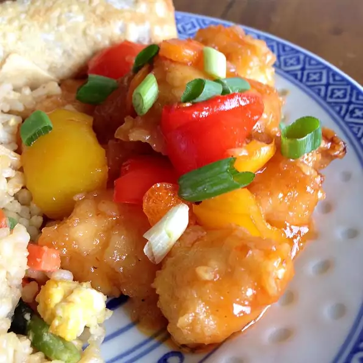

Sweet and Sour Chicken

Description
This sweet and sour chicken recipe features cubes of crispy chicken
served with a homemade sweet-and-sour pineapple sauce.
Ingredients
- 1 ¾ cups water, divided
- 1 (8 ounce) can pineapple chunks, drained (juice reserved)
- ¾ cup white sugar
- cup distilled white vinegar
- 2 drops orange food color
- ¼ cup cornstarch
- 2 ¼ cups self-rising flour
- 2 tablespoons vegetable oil
- 2 tablespoons cornstarch
- 1 egg
- ½ teaspoon salt
- ¼ teaspoon ground white pepper
- 1 ½ cups water
-
8 skinless, boneless chicken breast halves - cut into 1 inch cubes
- 1 quart vegetable oil for frying
- 2 green bell pepper, cut into 1 inch pieces
Yields 8 servings
Steps
-
Combine 1 1/2 cups of water, reserved pineapple juice, sugar, vinegar,
and orange food coloring in a medium saucepan. Bring to a boil over
medium heat; set aside. Mix 1/4 cup cornstarch and 1/4 cup water
together in a small bowl until smooth; pour into the sauce, stirring
continuously, until slightly thickened.
-
Place flour, 2 tablespoons oil, 2 tablespoons cornstarch, egg, salt,
and white pepper in a large bowl; gradually whisk in 1 1/2 cups water
to make a thick batter. Add chicken pieces; stir until well coated.
-
Heat oil in a large, deep skillet or wok to 360 degrees F (180 degrees
C). Fry chicken pieces in preheated oil until golden, about 10
minutes; remove and drain on paper towels.
-
Layer green peppers, pineapple chunks, and cooked chicken pieces on a
platter; pour hot sweet and sour sauce over top.